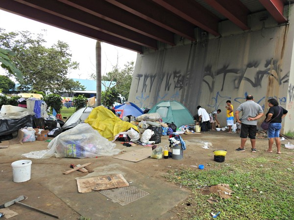

Os refugiados imigrantes da Venezuela são indivíduos que deixaram seu país de origem devido à crise política, econômica e social que afeta a nação sul-americana. Essas pessoas enfrentam desafios e dificuldades significativas em busca de uma vida melhor e de oportunidades em países vizinhos, como Brasil, Colômbia e Peru.
A crise na Venezuela resultou em escassez de alimentos, falta de serviços básicos, hiperinflação e aumento da violência. Diante dessas condições precárias, muitos venezuelanos se viram obrigados a deixar suas casas e buscar refúgio em outras terras. Os países de acolhimento têm se esforçado para receber esses imigrantes, mas enfrentam desafios para fornecer assistência adequada a todos.
É fundamental que a comunidade internacional se una para encontrar soluções para essa crise humanitária. Além de apoio financeiro, é necessário promover a integração desses refugiados nas sociedades receptoras, garantindo acesso a serviços de saúde, educação e oportunidades de trabalho. Também é importante que os países trabalhem em conjunto para resolver a crise na Venezuela, buscando a restauração da democracia e a estabilização do país.